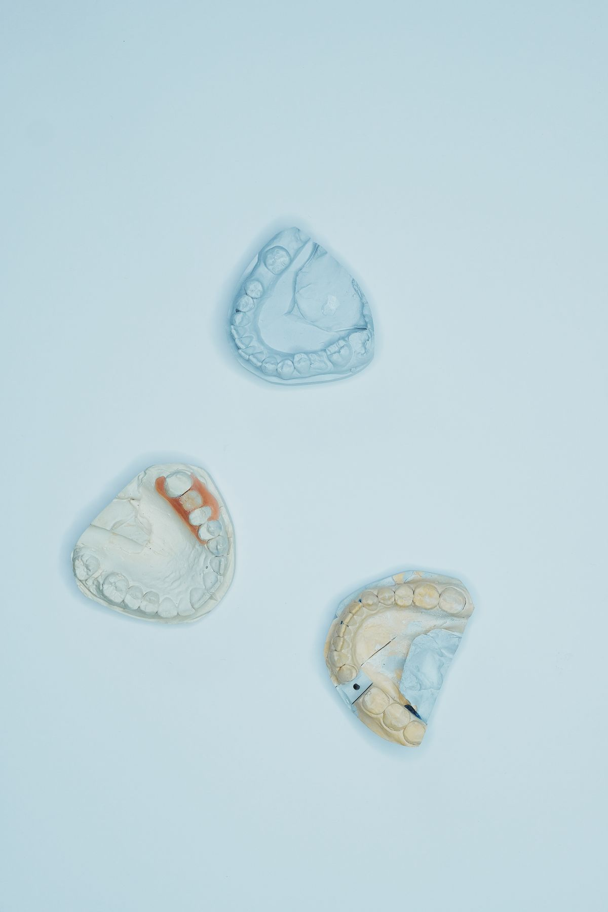

GURE ENPRESA
Ezagutza eta teknologia,
hortz bakoitzean.
Arrue Hortz Sintetikoak Euskal Herriko enpresa da, hortz sintetikoen diseinuan, ekoizpenean eta Europako banaketan aritzen dena.
Klinikek bidaltzen dizkiguten 3D diseinuak abiapuntu hartuta, diseinuaren eta ekoizpenaren arteko lana koordinatzen dugu.

ELKARLANEAN
Sei sail, prozesu partekatu bat.
Gure taldea gerentziako 5 lagunek, administrazioko 12k, IKTko 8k, ikerketako 10ek, diseinuko 10ek eta ekoizpeneko 10ek osatzen dute. Sailen arteko koordinazioa funtsezkoa da klinikaren diseinua azken piezarekin lotzeko.
Bi gunetan antolatutako ekoizpena
Lehen makinak fabrikazio automatizatua egiten du. Bigarrenak doitasunezko akabera lantzen du, egoitza nagusitik bi kilometrora dagoen gunean; bertan ekoizpeneko bost langile aritzen dira.
Trazabilitatea hobetzeko konpromisoa
Gure hobekuntza-ildoetako bat diseinuen, piezen eta klinika hartzaileen arteko lotura sendotzea da. Helburua da sailen eta ekoizpen-guneen arteko informazioa hobeto koordinatzea eta bidalketa-akatsak murriztea.
KONTUA ETA INFORMAZIOA
Pribatutasuna
Webgune honen erregistroak kontuaren identifikazio- eta harremanetarako datuak eskatzen ditu, baita profilaren irudia ere. Kontuaren atalean pasahitza eta profileko irudia alda daitezke.
Ez sartu pazienteen izenik, historia klinikorik edo osasun-daturik kontuko eremuetan edo produktuen deskribapenetan.
Webgune hau Arrueren ikasketa-proiektuaren parte da. Benetako zerbitzu gisa erabili aurretik, tratamenduaren arduraduna, kontaktua, helburuak, lege-oinarria, kontserbazio-epeak eta eskubideak erabiltzeko bidea zehaztu eta pribatutasun-informazioa osatu behar dira.
Irudien kredituak
Argazkiak hortz-lanaren irudi adierazgarriak dira; ez dira Arrueren instalazioen edo benetako produktuen argazkiak.
- Hortz-eredua: Ozkan Guner · Unsplash.
- Hortz-moldeak: Nadezhda Moryak · Pexels.
- Hortz-protesia: Arvind Philomin · Pexels.